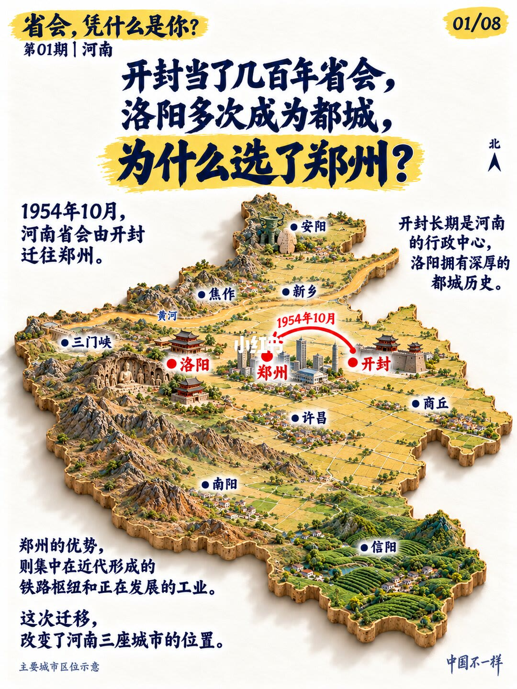
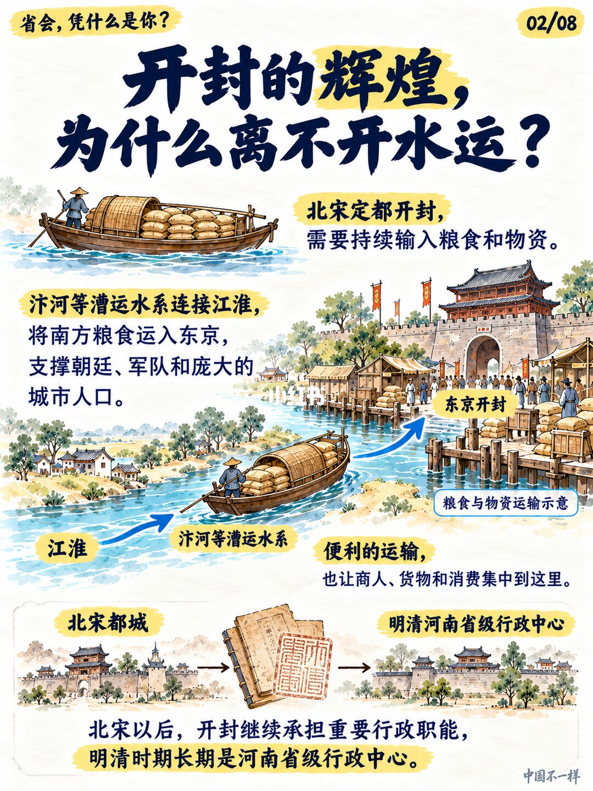
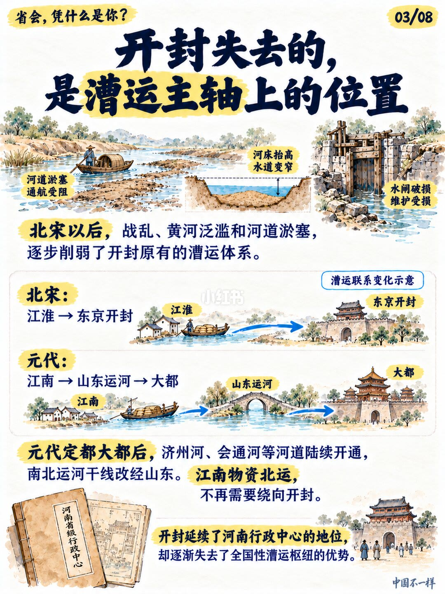
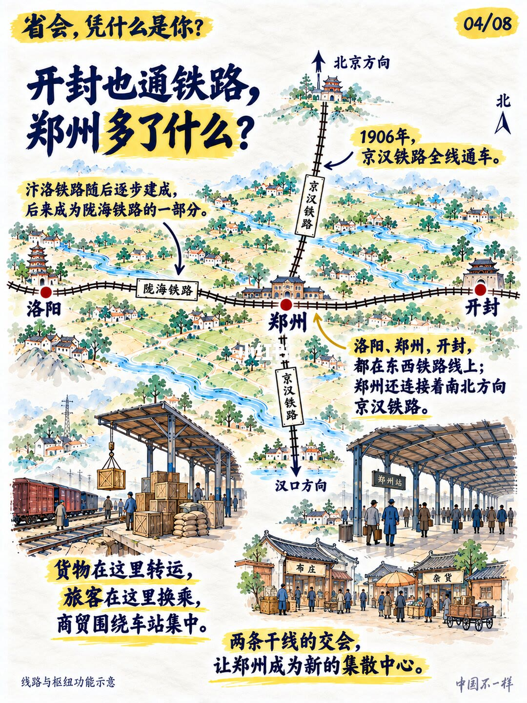
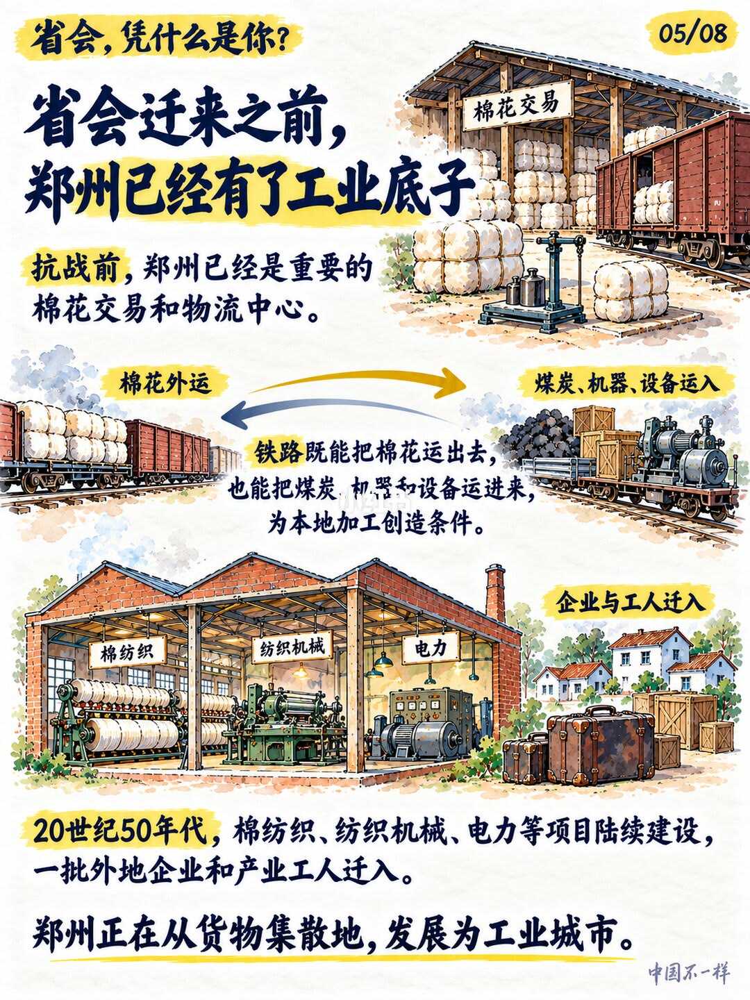
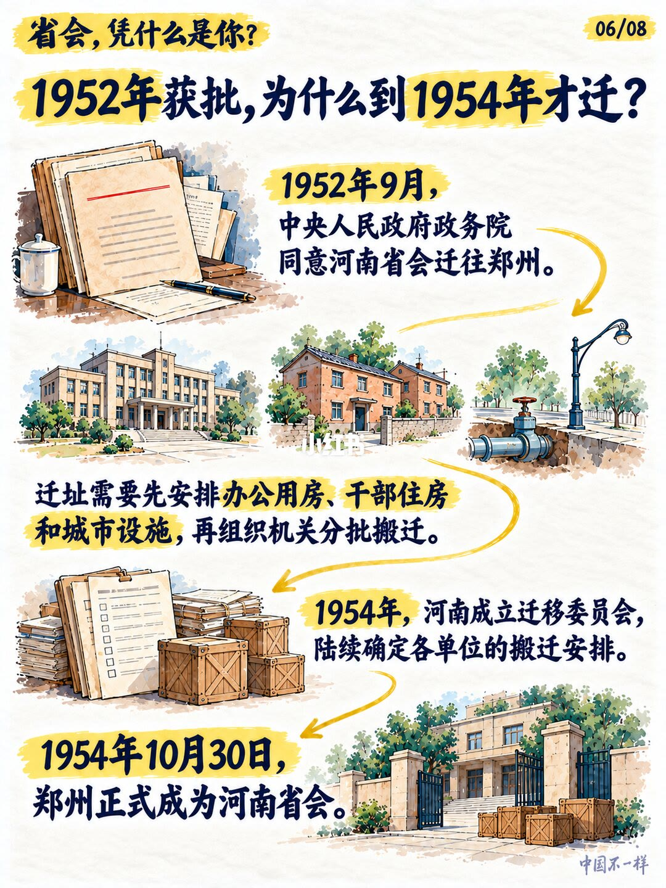
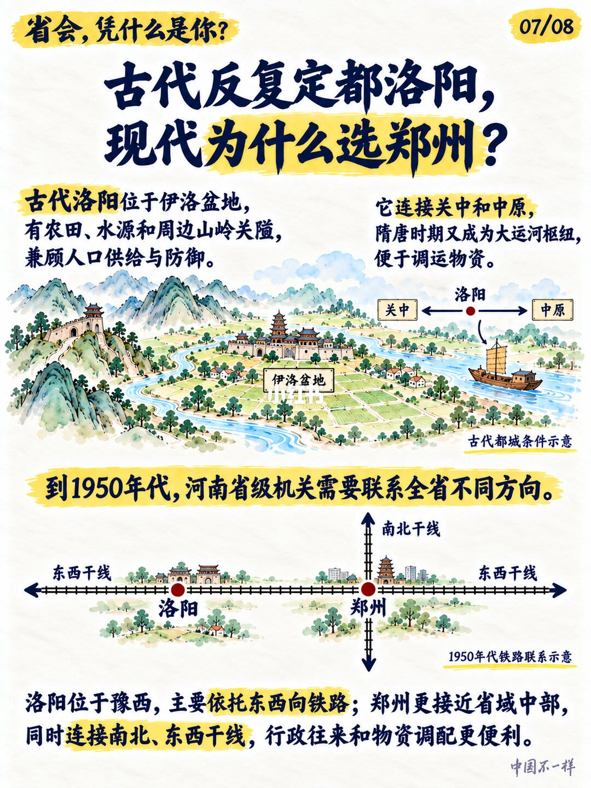
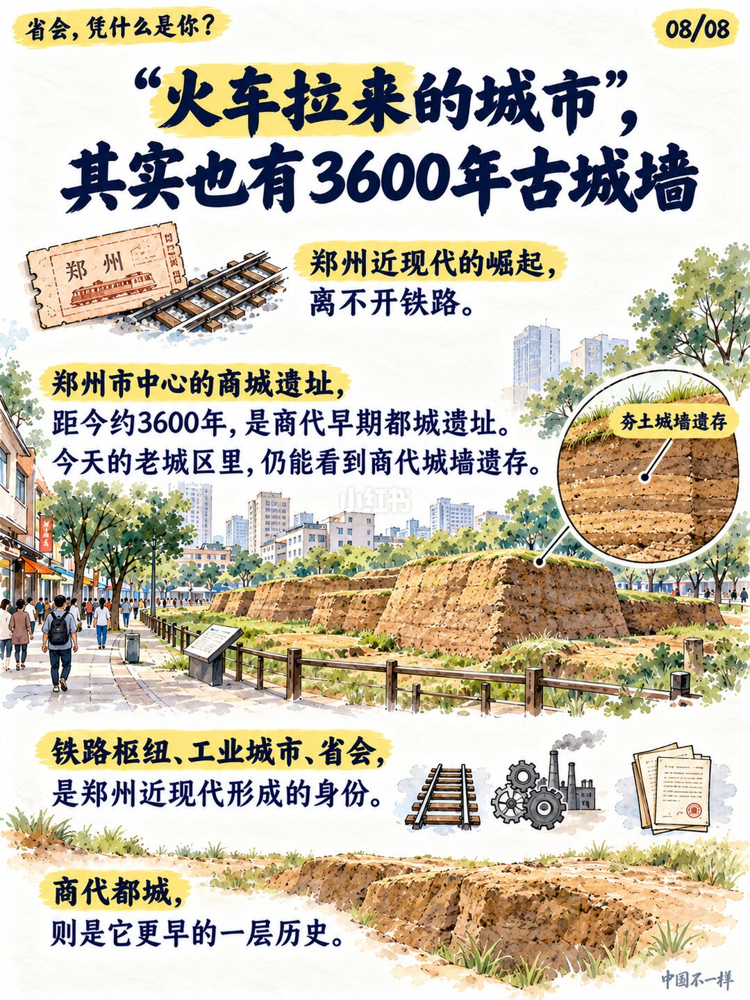

第 1 页：开篇设问：开封洛阳历史更长，为何1954年省会迁郑州？

1/8封面用河南立体地形标出郑汴洛：1954年10月省会自开封迁郑州；笔记点明郑州优势集中在近代铁路枢纽与发展中的工业。
Opening: Kaifeng and Luoyang have deeper history—why move the capital to Zhengzhou in 1954?
第 2 页：开封辉煌离不开水运：北宋漕运与明清行政中心

2/8北宋定都开封，汴河等漕运把江淮粮米运入东京，支撑朝廷军队与消费；北宋后开封仍长期承担河南省级行政中心。
Kaifeng’s glory needed water transport: Northern Song canals and later provincial admin role.
第 3 页：失去的是漕运主轴位置：淤塞战乱与运河改线

3/8战乱、黄河泛滥与河道淤塞削弱漕运；元代定都大都后运河干线改经山东，江南物资北运不再绕开封。开封保住行政中心，却丢掉全国性枢纽优势。
What was lost: the canal axis—siltation, wars, and Yuan rerouting via Shandong.
第 4 页：开封也通铁路，郑州多了京汉南北干线交会

4/8陇海东西线串起洛阳—郑州—开封；1906年京汉全线通车后，郑州成为东西+南北交会点，货运转乘、旅客换乘与站区商贸集聚，成为新的集散中心。
Kaifeng also has rail; Zhengzhou gains the Jinghan north–south crossing.
第 5 页：迁省会前已有工业底子：棉花交易到纺织电力

5/8抗战前已是棉花交易与物流中心；铁路外运棉花、运入煤与机器。1950年代棉纺织、纺机、电力等项目与外地企业工人迁入，从集散地走向工业城市。
Industrial base before the move: cotton trade to textiles and power.
第 6 页：1952年获批，为何1954年才迁？机关与住房要先备

6/81952年9月政务院同意迁郑州；需先安排办公用房、干部住房与市政，再分批搬迁。1954年成立迁移委员会，10月30日郑州正式成为省会。
Approved 1952, moved 1954: offices, housing, and staged relocation.
第 7 页：古代选洛阳：盆地防御与运河；现代选郑州：居中双干线

7/8洛阳伊洛盆地兼顾补给与关隘；隋唐凭运河成枢纽。1950年代省级机关需联系全省：洛阳偏西主要靠东西线，郑州更居中且南北东西皆通。
Ancient Luoyang: basin defense and canals; modern Zhengzhou: central dual-rail access.
第 8 页：火车拉来的城市，也有约3600年商城遗址

8/8近现代身份是铁路枢纽、工业城市、省会；市中心商城遗址约3600年，老城区仍有夯土城墙遗存——更早一层是商代都城史。
A railway city that also keeps ~3600-year Shang walls.
一句话抓手
- 开封：水运时代的行政+漕运中心 → 失去全国运河主轴后仍留省城，直到铁路时代被枢纽城市替代。
- 郑州：两条干线交会 + 棉花/纺织工业 → 1952批、1954迁。
- 洛阳：古代盆地防御与运河条件强；现代省级联系更看中居中双干线的郑州。